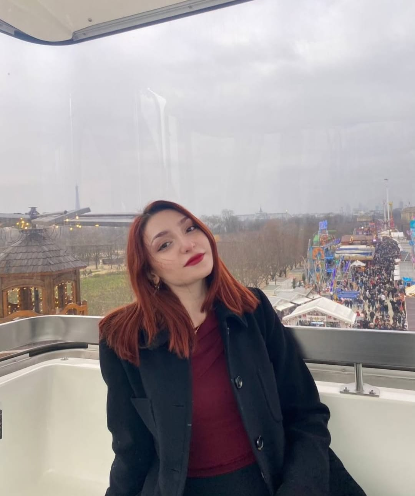

Is your soul a fire or are those eyes made of flame?
I wonder what kind of embers did this volcano catch fire with?
Does a moth ever hide itself from the flame?
You asked for it and this heart was ignited by force.

Your moonlit face makes God jealous,
This beauty cannot be seen even in the most soulful poem.
It is hard to approach, hard to get away from you;
It is the work of your heart, this beauty cannot be seen with the eye!